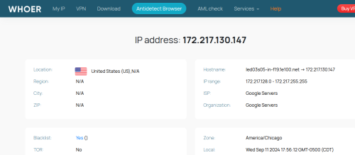

Всем привет!
Прошло уже два месяца с тех пор как цензурщики решили незаконно устроить что-то типа перманентной DDOS атаки на googlevideo.com (не знаю, я совсем не шарю в тонкостях) и Youtube перестал грузиться на домашних интернет провайдерах.
Возможно, кто-то за это время смог придумать способ обхода данной ситуации?
Если конкретно, то нужен способ обхода для простых смертных, не имеющих свой домашний сервер и тех кто ни разу не лазил в настройки роутера. Тех, кто покупает ноутбуки Apple, чтобы слиться с серой массой, кто ни знает ничего кроме Chome и Safari. В общем, для городского среднеклассного нормиса.
Читал на этом форуме, про ByeDPI. Пишут про него много хорошего, но увы, для пользователей Мас нет вариантов. Возможно, кто-то знает альтернативы с подобной функцией?
Может быть, существует хитрый способ запуска этой программы в оболочке Wine?
За любые наводки, буду крайне благодарен.
и нужно в хром подобных браузерах отключить функцию в настройках по этой ссылке
chrome://flags/#enable-tls13-kyber
Возможно, вам подойдет SpoofDPI GitHub - xvzc/SpoofDPI: A simple and fast anti-censorship tool written in Go
https://github.com/xvzc/SpoofDPI/releases/download/v0.11.1/spoofdpi-darwin-amd64.tar.gz
Для mac есть еще
Самый простой способ разные vpn точнее прокси расширения для браузера (подойдёт любое нормально работающее vpn расширения)
Не так давно я установил моему пожилому соседу пару “vpn” расширений, он остался доволен.
Если вы параноик и не доверяете подобным расширениям,то можно использовать tor.
(в последнее время похоже многие мосты блокируются,но WebTunnel или Snowflake скорее всего будет хорошо работать)
Юбуст и censortracker вроде работают (я не проверял) - это, наверное, самые элементарные варианты из возможных.
Ну или свой впн.
ТОР сейчас тот еще “вариант”
иногда ютуб пишет что “вы бот. залогиньтесь”
так же нередки теневые баны аккаунтов даже за антибаннеры. а уж известные всем EXIT ноды ТОРа уж точно в серых списках как минимум ограничений по скорости
p,s, на многих провайдерах забанены почти все ТОР IPv4 vanilla, IPv4 OBFS4 “свежие”. но да. пока еще webtunnel и snowflake неплохо работают
p.p.s. пока речь не идет о бане по ИП (причем как со стороны РКН так и гугла) нередко достаточно byedpi / zapret / goodbyedpi
Censor tracker не поможет это прокси. Страницу загрузит видео не воспроизведет. ВПН, bye dpi, spoof dpi нужны
Есть также расширение от “Дождя”. Правда, всего 3 часа в день. Но будет хорошей мотивацией “не залипать” за ютубом. Кстати, похоже что тему про него похоронили после восстановления из бэкапа.
А я использую webtunnel+tor чтобы обойти ограничение скорости Йоты для линуксовых репозиториев (хоть тариф и для модема, но похоже все популярные зеркала в списке на снижение). Забавно.
у меня с 3х разных EXIT в NL не давало качать yt-dlp
а вот Австрия сработала. но я не знаю какие там лимиты самого ТОРа и тем более ютуба по скорости. сколько там для 4К видео нужно avc1/etc ?
{kind=link}
Я тут интересную штуку сейчас изобрел:
yt-dlp https://www.youtube.com/watch?v=blablabla -f bv+ba/b --proxy socks5h://127.0.0.1:9150 -o - | ffmpeg -i pipe: -c copy output.mkv
Сначала yt-dlp получает адреса видео через прокси от тора, а потом передает их ffmpeg’у через pipe, который качает напрямую, без прокси, силами gdpi. Вроде как работает, но я не уверен, надо ещё тестить.
Хотя я щас потестил и это почему-то ещё медленнее чем просто через тор качать.
С выключенным gdpi тоже работает, что странно…
Окей, там можно без pipe обойтись: yt-dlp https://www.youtube.com/watch?v=blablabla -f bv+ba/b --proxy socks5h://127.0.0.1:9150 --downloader ffmpeg
Я так понимаю ffmpeg качает медленно из-за того что он проигрывает видео внутри себя прежде чем его записать, а yt-dlp записывает напрямую. Надо попробовать другую внешнюю качалку.
да там много вариантов для одного только yt-dlp и тем более браузеров
но сильно зависит от конкретного провайдера. от РКН и дальнейшей “борьбы”. да и сам гугл слишком активно взялзя за ограничения/баны
- IPv6 если есть и не режут скорость
- QUIC если провайдер не банит и доступ без прокси
- byedpi/zapret/goodbyedpi
- самый разные прокси (в том числе ТОР с оговорками. опера-прокси у кого работает.) или ВПН
- свой “сервер” если РКН не банит ИП хостинга и не режет протокол
- что то совсем “странное” вроде генераторов ВПН или совсем мутных “альтернатив” ТОРа с p2p
p.s. про сам yt-dlp
yt-dlp --proxy "" -r 1000K --extractor-args "youtube:formats=dashy" -N 4
тут ютуб режет скорость (у меня %curl1% это один из вариантов через SET curl2=c:\path\curl.exe ибо http3/quic это curl из chocolatey / winget / msys2)
yt-dlp --proxy "" -r 1000K --force-ipv4 --downloader %curl3% --downloader-args "-4 --http3-only"
(можно ipv6. можно без QUIC.)
ютуб тоже ограничивает но скорость только одного потока. а их можно (не знаю сколько там лимиты. 100+? или хоть 100500 если роутер потянет)
yt-dlp --proxy "" -r 1000K --force-ipv6 --external-downloader aria2c --external-downloader-args "-c -j10 -x10 -s10 -k1M --max-tries=100 --retry-wait=60
Ух, как мудрёно 
Моя идея была проще: получить через прокси чужие адреса GGC, например из каких-нибудь условных Нидерландов, но выкачать само видео с них напрямую, минуя прокси.
В итоге я сейчас вот к такому банальному варианту пришел:
yt-dlp https://www.youtube.com/watch?v=blablabla --proxy http://127.0.0.1:9180 --downloader aria2c --downloader-args aria2c:"--all-proxy="
Прокси отдает Тор, только надо в torrc добавить HTTPTunnelPort 9180 (aria не может в socks). А скачивает aria напрямую.
Вариант с курлом, через сокс
yt-dlp https://www.youtube.com/watch?v=blablabla --proxy socks5h://127.0.0.1:9150 --downloader curl --downloader-args curl:"--noproxy *"
Aria, с параметрами из твоего поста (кстати, спасибо за инфу; а то я раньше только нативно через yt-dlp качал, так что не знал что в aria передать):
yt-dlp https://www.youtube.com/watch?v=blablabla -r 1000K --proxy http://127.0.0.1:9180 --downloader aria2c --downloader-args aria2c:"-c -j10 -s10 -x10 -k1M -m100 --retry-wait=10 --all-proxy="
Вроде работает без проблем, закачка идет напрямую с иностранных GGC.
{kind=link}
зависит от провайдера… мой РТ вообще банит SNI googlevideo. но хоть временно перестали резать скорость IPv6
curl -4 -o NUL -k --connect-to ::speedtest.selectel.ru https://test.googlevideo.com/10MB -w %{speed_download} & echo. &
curl -6 -o NUL -k --connect-to ::speedtest.selectel.ru https://test.googlevideo.com/10MB -w %{speed_download}
% Total % Received % Xferd Average Speed Time Time Time Current
Dload Upload Total Spent Left Speed
0 0 0 0 0 0 0 0 --:--:-- 0:00:22 --:--:-- 0
curl: (35) Recv failure: Connection was reset
0
% Total % Received % Xferd Average Speed Time Time Time Current
Dload Upload Total Spent Left Speed
100 10.0M 100 10.0M 0 0 1233k 0 0:00:08 0:00:08 --:--:-- 1449k
1263128
так же блокируют QUIC на googlevideo
curl2 -4 --http3 -v -o NUL https://rr16---sn-axq7sn76.googlevideo.com/
- OpenSSL SSL_connect: Connection was reset in connection to rr16---sn-axq7sn76.googlevideo.com:443
- QUIC connection has been shut down
- QUIC connect to 172.217.130.160 port 443 failed: Could not connect to server
- Failed to connect to rr16---sn-axq7sn76.googlevideo.com port 443 after 30066 ms: Could not connect to server
curl: (7) Recv failure: Connection was reset
curl2 -6 --http3-only -v -o NUL https://rr16---sn-axq7sn76.googlevideo.com/
curl: (7) QUIC connection has been shut down
curl2 -6 --http3 -v -o NUL https://rr16---sn-axq7sn76.googlevideo.com/
< HTTP/1.1 404 Not Found
< Date: Mon, 09 Sep 2024 16:26:17 GMT
< Content-Type: text/html; charset=UTF-8
< Server: gvs 1.0
quic блочат для *.googlevideo.com stateless режимом только на адресах гугла в РФ и гугл кешей в РФ. На адреса за пределами РФ quic *.googlevideo.com работает, но замедляется. (Скорее всего как раз для этого в начале августа ркн и собирал ip адреса гугл кешей у провайдеров)
а еще ютуб такое регулярно выдает
curl.exe -6 https://redirector.googlevideo.com/report_mapping?di=no
2a00:62c0: => arn09s18 : router: “pr03.arn16” next_hop_address: “127.0.0.1” (2a00:62c0:fa2::/47)
p.s.
Спойлер
rr1.sn-5goeenez.googlevideo.com. 30m A 74.125.111.6 (AS15169 Google LLC) (arn11s14-in-f6.1e100.net.)
tracert -6 rr1---sn-5goeenez.googlevideo.com
2 12 ms 14 ms 16 ms 2a00:62c0::6
3 * * * Превышен интервал ожидания для запроса.
4 * * * Превышен интервал ожидания для запроса.
5 34 ms 23 ms 25 ms 2a01:620:1:2090::2
6 * 30 ms * 2001:4860:0:1::17f3
7 * * * Превышен интервал ожидания для запроса.
8 44 ms 60 ms 40 ms 2001:4860::c:4001:7ba
9 56 ms 64 ms 39 ms 2001:4860::9:4001:44d
10 45 ms 39 ms 53 ms 2001:4860:0:1::683f
11 42 ms 51 ms 48 ms arn11s14-in-f6.1e100.net [2a00:1450:400f:1::6]
tracert -4 rr1---sn-5goeenez.googlevideo.com
3 33 ms 24 ms 41 ms 213.59.232.182
4 66 ms 37 ms 34 ms 217.107.120.223
5 52 ms 70 ms 52 ms 5.143.253.245
6 30 ms 38 ms 33 ms 192.178.241.63
7 34 ms 32 ms 45 ms 192.178.241.66
8 69 ms 97 ms 52 ms 209.85.255.116
9 98 ms 75 ms 61 ms 108.170.234.90
10 62 ms 85 ms 43 ms 192.178.73.203
11 50 ms 43 ms 41 ms 142.251.239.121
12 44 ms 73 ms 54 ms arn11s14-in-f6.1e100.net [74.125.111.6]
curl -6 --http3-only -v https://rr1---sn-5goeenez.googlevideo.com/
Failed to connect to rr1---sn-5goeenez.googlevideo.com port 443 after 10273 ms: Failed sending data to the peer
curl: (55) ngtcp2_conn_handle_expiry returned error: ERR_HANDSHAKE_TIMEOUT
Вот что у меня в логе
[debug] curl command line: curl --location -o “Jon Bon Jovi - Blaze Of Glory (Official Music Video) [MfmYCM4CS8o].mp4.part” --compressed --cookie “_octo=GH1.1.44149640.1723404875” --header “User-Agent: Mozilla/5.0 (Windows NT 10.0; Win64; x64) AppleWebKit/537.36 (KHTML, like Gecko) Chrome/92.0.4515.43 Safari/537.36” --header “Accept: text/html,application/xhtml+xml,application/xml;q=0.9,/;q=0.8” --header “Accept-Language: en-us,en;q=0.5” --header “Sec-Fetch-Mode: navigate” --continue-at - --verbose --retry 10 –proxy http://127.0.0.1:18080/ --noproxy * – “https://rr2---sn-p5qlsn6l.googlevideo.com/videoplayback?expire=1726031045&ei=ZdDgZrmMMJCFkucPvvyMwAg&ip=2001%3A67c%3A2628%3A647%3Af%3A%3A3b5&id=o-AO1DVJoBbH4UR_fZMwsKxHxNAQnQf3zvxZSMxDH91mT0&itag=18&source=youtube&requiressl=yes&xpc=EgVo2aDSNQ%3D%3D&mh=ac&mm=31%2C26&mn=sn-p5qlsn6l%2Csn-ab5l6nkd&ms=au%2Conr&mv=m&mvi=2&pl=48&gcr=us&initcwndbps=330000&siu=1&bui=AQmm2eyvOFOkXDpCwtMMkiVp1YavgYR2bMWWutMZlhVdxeWPkdaJ7Hk7CErHRFrU85mwcsu4kQ&spc=Mv1m9uxGvHNV5V7OMJShioy8GM_mA7xHop38_NxqQrLNfTTDPBua4-l2LLe2OufUnaAL&vprv=1&svpuc=1&xtags=heaudio%3Dtrue&mime=video%2Fmp4&ns=0j_08J1Lf1xfVnXjSV86DH0Q&rqh=1&cnr=14&ratebypass=yes&dur=344.769&lmt=1711579463267675&mt=1726009039&fvip=5&c=WEB_CREATOR&sefc=1&txp=4538434&n=cJVC6dnmuXLRmw&sparams=expire%2Cei%2Cip%2Cid%2Citag%2Csource%2Crequiressl%2Cxpc%2Cgcr%2Csiu%2Cbui%2Cspc%2Cvprv%2Csvpuc%2Cxtags%2Cmime%2Cns%2Crqh%2Ccnr%2Cratebypass%2Cdur%2Clmt&lsparams=mh%2Cmm%2Cmn%2Cms%2Cmv%2Cmvi%2Cpl%2Cinitcwndbps&lsig=ABPmVW0wRQIhAMOOs8CKo9oVUY6UkVwerl5AyTn7pyj2_ooN545pWLhcAiB0c16gJmVKO0fR-hTYpsFf2luUDg2VCstwtipajwVvpA%3D%3D&sig=AJfQdSswRQIgSMWTiS4sTL3xw0jXvMfWj250l7b4e3GjN0jiOnswp-wCIQD_6NLEccwRBK_2Gio2zmSXntjSp4oP18pWLZx5H3aEjQ%3D%3D”
Т.е. в командную строку curl передается прокси, несмотря на флаг --noproxy. И закачка идет через прокси, а вовсе не напрямую, как мы думали
Естественно, передается. Поэтому там стоит флаг “–noproxy *” который говорит чтобы прокси игнорировалось для всех * доменов.
Ну в любом случае у меня ни фига не качается(
* OpenSSL SSL_connect: Connection was aborted in connection to rr2---sn-5qlsn6l.googlevideo.com:443
yt-dlp -g
полученный адрес
curl -v -o NUL https://rr2---sn-p5qlsn6l.googlevideo.com/
и смотреть что там не так
там буква потеряна. неясно как rr2—sn-p5qlsn6l.googlevideo.com
curl rr2---sn-5qlsn6l.googlevideo.com
curl: (6) Could not resolve host: rr2---sn-5qlsn6l.googlevideo.com
Все та же HTTP/1.1 403 Forbidden
Спойлер
[debug] curl command line: curl --location -o “Ludwig van Beethoven Ode an die FreudeOde to Joy 1 [-kcOpyM9cBg].mp4.part” --compressed --cookie “_octo=GH1.1.44149640.1723404875” --header “User-Agent: Mozilla/5.0 (Windows NT 10.0; Win64; x64) AppleWebKit/537.36 (KHTML, like Gecko) Chrome/92.0.4515.131 Safari/537.36” --header “Accept: text/html,application/xhtml+xml,application/xml;q=0.9,/;q=0.8” --header “Accept-Language: en-us,en;q=0.5” --header “Sec-Fetch-Mode: navigate” --continue-at - --verbose --retry 10 --proxy http://127.0.0.1:18080/ --insecure --noproxy * – “https://rr3---sn-p5qs7nsk.googlevideo.com/videoplayback?expire=1726087056&ei=MKvhZunxBsa0kucP1ZiA2Ag&ip=2001%3A67c%3A2628%3A647%3A2%3A%3A14&id=o-AKmzuIXlyELLBXRmChQ_Vz5vHtjniTs-X_NvyZj32A5p&itag=18&source=youtube&requiressl=yes&xpc=EgVo2aDSNQ%3D%3D&mh=kQ&mm=31%2C26&mn=sn-p5qs7nsk%2Csn-ab5l6ndr&ms=au%2Conr&mv=m&mvi=3&pl=48&gcr=us&initcwndbps=386250&siu=1&bui=AQmm2eyteGEZHK1LBOfSdIWE6pZRKN26ePMSXsxDT-Ge7UWpzoCf0JXhvjuhjw_z-peopQNsrg&spc=Mv1m9jj88pEzkCZ91wm5jPWP352Vgq7NPUhY6pUozErZMegzH2vXltP4INJUCDhOxKED&vprv=1&svpuc=1&mime=video%2Fmp4&ns=V2VuqbzeWMKYpURkCRNTUjMQ&rqh=1&gir=yes&clen=9084445&ratebypass=yes&dur=492.146&lmt=1700711851920708&mt=1726064977&fvip=4&c=WEB_CREATOR&sefc=1&txp=5538434&n=iftRaaKOWXjSZQ&sparams=expire%2Cei%2Cip%2Cid%2Citag%2Csource%2Crequiressl%2Cxpc%2Cgcr%2Csiu%2Cbui%2Cspc%2Cvprv%2Csvpuc%2Cmime%2Cns%2Crqh%2Cgir%2Cclen%2Cratebypass%2Cdur%2Clmt&lsparams=mh%2Cmm%2Cmn%2Cms%2Cmv%2Cmvi%2Cpl%2Cinitcwndbps&lsig=ABPmVW0wRgIhAKiSQw0b28V85mk2RsY8K5T3tFJvOc-tcAMQJvOXvz9AAiEAktAXntOX878YzZdrRMVfQLgqR99lVHXMucGHuxSANw0%3D&sig=AJfQdSswRQIgSHkSK7GfE9U5fbr_Q46r24ZGf-OVgwkeS9wc4FSX1u4CIQDbaoX9-MD4fXdx5NJigg_HiT_mrsOiBgD0UHctO3EmKA%3D%3D”
% Total % Received % Xferd Average Speed Time Time Time Current
Dload Upload Total Spent Left Speed0 0 0 0 0 0 0 0 --:–:-- --:–:-- --:–:-- 0* Host rr3---sn-p5qs7nsk.googlevideo.com:443 was resolved.
- IPv6: 2607:f8b0:4004:f::8
- IPv4: 74.125.155.136
- Trying 74.125.155.136:443…
- Failed to set TCP_KEEPINTVL on fd 172: errno 10042
- Failed to set TCP_KEEPCNT on fd 172: errno 10042
- Connected to rr3---sn-p5qs7nsk.googlevideo.com (74.125.155.136) port 443
- ALPN: curl offers h2,http/1.1
- TLSv1.3 (OUT), TLS handshake, Client hello (1):
} [328 bytes data]- TLSv1.3 (IN), TLS handshake, Server hello (2):
{ [122 bytes data]- TLSv1.3 (IN), TLS handshake, Unknown (8):
{ [6 bytes data]- TLSv1.3 (IN), TLS handshake, Certificate (11):
{ [4350 bytes data]- TLSv1.3 (IN), TLS handshake, CERT verify (15):
{ [80 bytes data]- TLSv1.3 (IN), TLS handshake, Finished (20):
{ [52 bytes data]- TLSv1.3 (OUT), TLS handshake, Finished (20):
} [52 bytes data]- SSL connection using TLSv1.3 / TLS_AES_256_GCM_SHA384 / [blank] / UNDEF
- ALPN: server did not agree on a protocol. Uses default.
- Server certificate:
- subject: CN=*.c.docs.google.com
- start date: Aug 27 14:31:13 2024 GMT
- expire date: Nov 5 14:31:12 2024 GMT
- issuer: C=US; O=Google Trust Services; CN=WR2
- SSL certificate verify result: unable to get local issuer certificate (20), continuing anyway.
- Certificate level 0: Public key type ? (256/128 Bits/secBits), signed using sha256WithRSAEncryption
- Certificate level 1: Public key type ? (2048/112 Bits/secBits), signed using sha256WithRSAEncryption
- Certificate level 2: Public key type ? (4096/128 Bits/secBits), signed using sha256WithRSAEncryption
- using HTTP/1.x
0 0 0 0 0 0 0 0 --:–:-- --:–:-- --:–:-- 0> GET /videoplayback?expire=1726087056&ei=MKvhZunxBsa0kucP1ZiA2Ag&ip=2001%3A67c%3A2628%3A647%3A2%3A%3A14&id=o-AKmzuIXlyELLBXRmChQ_Vz5vHtjniTs-X_NvyZj32A5p&itag=18&source=youtube&requiressl=yes&xpc=EgVo2aDSNQ%3D%3D&mh=kQ&mm=31%2C26&mn=sn-p5qs7nsk%2Csn-ab5l6ndr&ms=au%2Conr&mv=m&mvi=3&pl=48&gcr=us&initcwndbps=386250&siu=1&bui=AQmm2eyteGEZHK1LBOfSdIWE6pZRKN26ePMSXsxDT-Ge7UWpzoCf0JXhvjuhjw_z-peopQNsrg&spc=Mv1m9jj88pEzkCZ91wm5jPWP352Vgq7NPUhY6pUozErZMegzH2vXltP4INJUCDhOxKED&vprv=1&svpuc=1&mime=video%2Fmp4&ns=V2VuqbzeWMKYpURkCRNTUjMQ&rqh=1&gir=yes&clen=9084445&ratebypass=yes&dur=492.146&lmt=1700711851920708&mt=1726064977&fvip=4&c=WEB_CREATOR&sefc=1&txp=5538434&n=iftRaaKOWXjSZQ&sparams=expire%2Cei%2Cip%2Cid%2Citag%2Csource%2Crequiressl%2Cxpc%2Cgcr%2Csiu%2Cbui%2Cspc%2Cvprv%2Csvpuc%2Cmime%2Cns%2Crqh%2Cgir%2Cclen%2Cratebypass%2Cdur%2Clmt&lsparams=mh%2Cmm%2Cmn%2Cms%2Cmv%2Cmvi%2Cpl%2Cinitcwndbps&lsig=ABPmVW0wRgIhAKiSQw0b28V85mk2RsY8K5T3tFJvOc-tcAMQJvOXvz9AAiEAktAXntOX878YzZdrRMVfQLgqR99lVHXMucGHuxSANw0%3D&sig=AJfQdSswRQIgSHkSK7GfE9U5fbr_Q46r24ZGf-OVgwkeS9wc4FSX1u4CIQDbaoX9-MD4fXdx5NJigg_HiT_mrsOiBgD0UHctO3EmKA%3D%3D HTTP/1.1Host: rr3---sn-p5qs7nsk.googlevideo.com
Accept-Encoding: deflate, gzip, br, zstd
Cookie: _octo=GH1.1.44149640.1723404875
User-Agent: Mozilla/5.0 (Windows NT 10.0; Win64; x64) AppleWebKit/537.36 (KHTML, like Gecko) Chrome/92.0.4515.131 Safari/537.36
Accept: text/html,application/xhtml+xml,application/xml;q=0.9,/;q=0.8
Accept-Language: en-us,en;q=0.5
Sec-Fetch-Mode: navigate
- Request completely sent off
> < HTTP/1.1 403 Forbidden
< Last-Modified: Wed, 02 May 2007 10:26:10 GMT
< Content-Type: text/plain
< Content-Length: 0
< Connection: close
< Vary: Origin
< Cross-Origin-Resource-Policy: cross-origin
< X-Content-Type-Options: nosniff
< Date: Wed, 11 Sep 2024 14:37:40 GMT
< Server: gvs 1.0
0 0 0 0 0 0 0 0 --:–:-- --:–:-- --:–:-- 0- shutting down connection #0
- TLSv1.3 (OUT), TLS alert, close notify (256):
} [2 bytes data]
Возможно 403 - это когда ip иностранный, но гугл как-то определяет, что ты из России? Точнее при несовпадении ggc для данного ip и того ggc, который гугл тебе назначил. Может такое быть?.. Меня наверно куки выдают, а без кук записывают в боты
< HTTP/1.1 404 Not Found
< Date: Wed, 11 Sep 2024 18:54:02 GMT
< Server: gvs 1.0
< HTTP/3 404
< date: Wed, 11 Sep 2024 18:55:11 GMT
< server: gvs 1.0
В общем, подводя итоги:
Для видео “недоступные в вашей стране”, когда ссылка получена через зарубежный прокси и далее качается напрямую с gdpi (через curl, aria2c, неважно) , гугл футболит меня с ошибкой 403
Тоже самое и в браузере (если все, кроме googlevideo.com пустить через прокси)
Для всех остальных видео этот метод работает
Т.е можно попробовать получить рабочие ggc пустив все, кроме googlevideo.com, через зарубежный прокси (тот же опера или censor tracker). Попытка не пытка, может у кого-то и сработает.
Что-то у меня так не получается. Я попробовал пустить через прокси youtube.com, youtu.be, redirector.googlevideo.com, manifest.googlevideo.com и днс запросы к ним, а мне всё равно подсовывает ggc от моего провайдера (-n3toxu) и из моего города (axq7sn)…
{kind=link}
Хотя, может и получается… Надо ещё потестить.
Да, так и должно быть.
Но на скрине есть рабочий rr3---sn-axq7sn76.googlevideo.com , а whois говорит , что это штаты

Я вот тут смотрел, написано СПб
Окей, у меня получилось! Сервера из Нидерландов, Польши и Германии. Что интересно, ютуб по-прежнему пытается подсунуть мне скайнетовские n3toxu.
{kind=link}
Ну гугл как-то вычисляет реальное местоположение, раз выдает 403 для видео “не для вашей страны”.
Он как-то вычисляет страну даже при использовании yt-dlp через opera-proxy.
Правда если сменить страну с дефолтной европы на америку, то выводится ставшее теперь стандартным сообщение залогиниться.
утечки DNS вы учитываете?
Новосибирск, Йота. IP провайдера 188.x.x.x
Видео грузятся с новосибирского GGC Мегафона сейчас (проверено пингом IP, хотя в whois Поволжье, но это неправда, по данным 2ip.ru значится Proxy-registered route object Мегафона, AS31133). Раньше грузилось из Москвы.
В браузере проблем нет, но в начале несколько 403 ошибок всё-таки проскакивает.
ip запрос в URL в этом случае ip=3.86.96.83 Amazon по whois США, не пингуется
Данные GGC, который выдаёт 403:
rr4---sn-5hne6nzd.googlevideo.com
74.125.100.233 ams15 Google AS15169 NL ping (минимальный пинг из NL).
после чего браузер грузит с местного GGC. И ip в URL вроде как правильный там.
Это по TCP (QUIC выключен), с zapret.
Так вот, что за странный ip=3.86.96.83 от Amazon действительно непонятно.
ну вот это то ли баг или толи фича вроде next_hop 127.0.0.1
там самые разные левые ИП не клиента. у меня были в том числе из РФ но SPB
еще непонятная фигня что при рабочем IPv6 в 403 ошибках чужие IPv4
{kind=link}
и вообще один раз видел ip=0.5.123.13 (условно)
{kind=link}
вообще лично второй раз вижу такую “ересь” до этого только видел 0.0.7.209 (телеграм broadcast какой то)
Но в основном адреса с 403 это ipv4, не ipv6?
вот честно раньше не следил. может и бывают 403 с чужим IPv6
судя по последним скриншотам лично у меня то 403 это обычно IPv4 в URL. даже если адрес “сервера” пишет IPv6 или прокси с IPv6 рабочим
хотя опять же может тут всё сразу “бан” РКНа + баги гугла + новые запреты ютуба
вот 3и запуска подряд. 1 ошибка и 2а успешных…
curl -6 --http3-only https://redirector.googlevideo.com/report_mapping?di=no
curl: (55) ngtcp2_conn_handle_expiry returned error: ERR_HANDSHAKE_TIMEOUT
=> arn11s13 : router: “pf09.arn16” next_hop_address: “2001:4860:1:1::32e7”
другая версия. 2а нормально 3ий ошибка
curl: (7) QUIC connection has been shut down